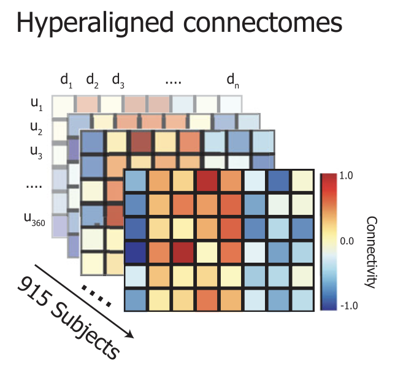

GitHub Repositories
-
Temporal-PHATE analyses
Analysis code and tools for the T-PHATE manifold learning method for fMRI timeseries, as described in "Multi-view manifold learning of human brain-state trajectories" (Nature Computational Science, 2023).
-
 Exogenous-PHATE analyses
Exogenous-PHATE analysesCode for manifold learning analyses of adolescent brain and environment interactions predicting emotional and behavioral problems, as published in Biological Psychiatry: Cognitive Neuroscience and Neuroimaging (2024).
-

ABCD - Hyperalignment
Analysis scripts for dissociation of reliability, predictability, and heritability in functional connectomes during development, as published in Journal of Neuroscience (2024).
-
 Hybrid Hyperalignment (H2A)
Hybrid Hyperalignment (H2A)Code for hybrid hyperalignment: a high-dimensional model of shared information in cortical patterns of response and functional connectivity, as published in NeuroImage (2021).
-
 avatarRT Unity Task
avatarRT Unity TaskUnity-based real-time neurofeedback game for fMRI, designed for the AvatarRT project. Provides a customizable environment for closed-loop brain-computer interface experiments.
-
Neurofeedback avatarRT Analyses
Analysis pipeline for AvatarRT real-time fMRI neurofeedback experiments, including preprocessing, statistical analysis, and visualization tools.
-
 Representations for Biomarkers
Representations for BiomarkersRepository for reproducible biomarker discovery in neuroimaging, with scripts and workflows for robust feature selection and validation.